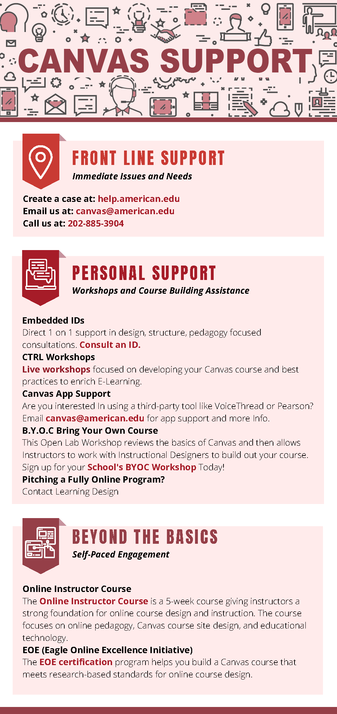

|
JUSTIN R. LOPEZTechnical Trainer and Developer 5 years in the E-Learning field |
BIO
As the Manager of E-Learning and Support Services, I have supported AU’s migration to Canvas; reaching our goal of 45% migration within two semesters. I work directly with vendors, department heads, and manage admin schedules. Additionally I provide faculty training, assist Tier 2 Admin support, create promotional infographics, and develop training curriculum.
As a Technical Trainer, I supported the Excalibur division of RCL creating a variety of learning content to meet their training needs. Met with teams and devised learning strategies and best practices for change management. Created training from scratch with little guidaince on tools functionality. Developed a 18-panel storyboard and led a pitch for a revamped Internship program.
As a LMS Administrator, I supported 55,000 students and faculty using our two LMS’, troubleshot issues and contacted vendors daily. Developed a repository of SQL queries to pull data records for course activity and academic investigations.Took conference opportunities to provide live support, be an LMS resource, and build instructors confidence as we migrated over to a new LMS. I hosted trainings for instructors and new admins, going over LMS functionality as well as other tools largely used in the university. I headed development projects with multiple vendors, personally ensuring their tool was fully tested, documented, and implemented into our new LMS within the university deadline.
As a Course Developer, I improved educational curriculum and resolved issues in credit courses, while creating tool training guides and course initiatives for faculty. The role gave me a strong foundation on how to design and implement educational content for a diverse group of users. Created a fully automative librarian system through Google Scripts, and developed marketing material seen throughout campus and on our learning environments.
WORK PORTFOLIO
| ITEM | MATERIAL | INFO |
| Canvas 101 Course | Canvas Course | Created training course for Instructors new to the LMS. Guides instructors building their course from scratch while learning the system. |
| Course Copy Guide | Guide created to walk instructors through copying their Canvas course from one semester to the next. Developed content, theming and formatting. | |
| Royal IBT Refresher | RISE CBT | Prepared agents to use the new booking platform. Developed all storyline, video, image, and text content seen in course. |
| My Royal Cruise CBT | RISE CBT | Familiarized agents with the new guest facing website. Developed all gif, image, and text content seen in course. |
| IBT User Deck | PPTX | Developed click-by-click walkthrough of new system using PowerPoint animations. Developed all content seen in deck. |
| Royal IBT User Guide | Used deck to create User Guide of new booking system. |
MEDIA PORTFOLIO
 |
 |
 | |
Created multiple gifs to aid training content.
|
Created 18-panel storyboard for RCL Intern Program. Design Thinking Course.
|
Created infographics for designer roles at FIU.
|
Created infographics for Canvas support at AU.
|